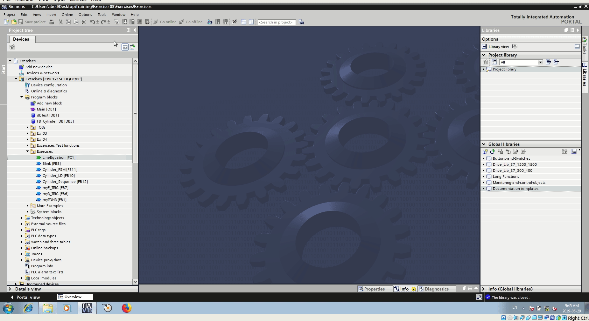
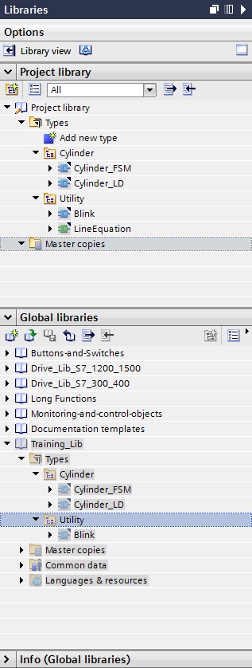
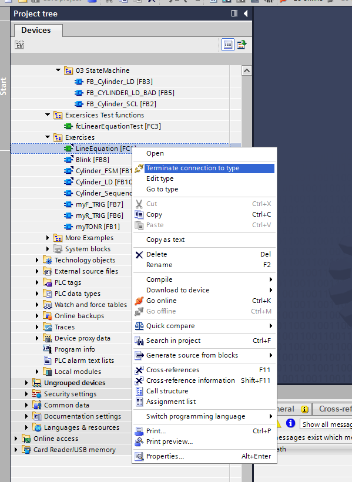

11. Library¶

Create a new library

Add function block (FB) and function (FC) to the library

Modify a function and update the global library

Open an existing library
Tia portal create a local copy of the functions from the global library.
The functions are related to the Project library. When a function is modified is modified in the Project library.
When modification is complete the global library can be updated from the Project library

Project library and Global libraries
A function can be separated from the library. Notice that the small triangle on the top right of the function icon disappear when the connection to the library is canceled.

Download Library